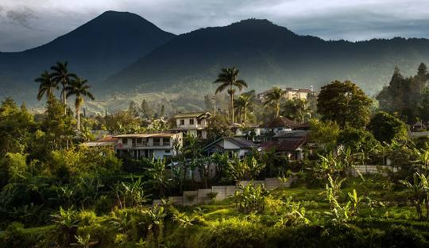

Jogja

Kota Yogyakarta adalah ibu kota sekaligus pusat pemerintahan dan perekonomian dari provinsi Daerah Istimewa Yogyakarta, Indonesia. Kota ini adalah kota yang mempertahankan konsep tradisional dan budaya Jawa.
160k
100k
Bali

Bali, dikenal juga sebagai Pulau Dewata adalah sebuah provinsi di Indonesia yang terletak pada bagian barat Kepulauan Nusa Tenggara dengan ibu kota di Kota Denpasar.
160k
100k
Bandung

Kota Bandung adalah sebuah kota sekaligus menjadi ibu kota provinsi di Provinsi Jawa Barat, Indonesia. Kota Bandung juga merupakan kota terbesar keempat di Indonesia, setelah Jakarta, Kota Surabaya, dan Kota Medan.
160k
100k